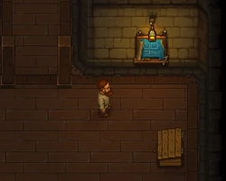
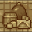
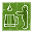
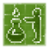

Cellar
| Cellar | |
|---|---|
 | |
Location information
| |
Buildable
|
True |
Npcs
| |
| Zombie | |

The cellar is primarily accessed through your house. It is used for storage, brewing and winemaking. From here you can access tunnels the morgue, the church, the dungeon, the village and the alchemy lab after you removed the blockages.
At the beginning, there are some broken barrels and sacks containing basic materials useful in the early game. Removing those is also important to make space for new workstations to produce 
red wine, 
a mug of beer,
Booze,
Bottle of apple ferment and
Bottle of berry ferment. The chest there contains an interesting cooking recipe. Use it to learn how to prepare simple and tasty food.
Upon first entering the cellar, a cutscene is played, where you first meet Snake to start up his questline.
Barn Cellar


A section of the cellar is called the "barn cellar". This is where the chute of the crate factory ends, and the
crates are stored automatically on pallets. There's also a porter station available, where you can put a  zombie at work to haul the crates over to the trade office.
zombie at work to haul the crates over to the trade office.
Workstations
Stations in the cellar (except for vine press) do not need the player to actively operate them, but rather load material in the trunk, queue processes and wait for the products.
 Cellar | |||
|---|---|---|---|
| Blueprint | Required Materials | Size | Notes |
| Trunk | 4× Flitch 4× Nails 4× Simple iron parts |
3x2
2x3 |
Available from the beginning |
| 12× Flitch 4× Complex iron parts 10× A piece of stone |
5x4 | Requires Winemaking | |
| Fermentation barrel | 8× Flitch 4× Simple iron parts |
3x3 | Requires Digestion |
| 24× A piece of stone 4× Simple iron parts |
4x3 | Requires Brewing | |
| Wine making barrel | 12× Flitch 5× Simple iron parts 7× Nails |
4x4 | Requires Winemaking |
| Alcohol distiller | 20× A piece of stone 8× Complex iron parts 12× Flitch |
7x4
4x7 |
Requires Strong Alcohol |
 Zombie-brewery |
32× A piece of stone 12× Simple iron parts 4× Complex iron parts |
Can only be built once
Requires Zombie-brewery | |
 Zombie-winery |
18× Wooden plank 20× Flitch 12× Simple iron parts |
Can only be built once
Requires Zombie-winery | |


Brewing
There are four main types of alcohol consumables that can be produced:
| Alcohols | ||
|---|---|---|
| Product | Ingredients | Notes |
| 10× A mug of beer |
50× Water 3× Hops 15× Wheat |
Can be produced in either the Brewing stand or Zombie-brewery |
| 10× A mug of mead |
50× Water 3× Hops 1× Honey |
Produced in the Brewing stand |
| 20× Red wine |
2× Pail of grape juice |
Produced in Wine making barrel |
| 40× Red wine |
60× Grapes |
Produced in Zombie-winery |
| 1× Booze |
5× Bottle of apple ferment |
Produced in Alcohol distiller
Requires fuel |
| 1× Booze |
4× Bottle of berry ferment | |
| 1× Booze |
3× Red wine | |
| 1× Infusion |
1× Booze 3× Red mushroom | |
| |||||